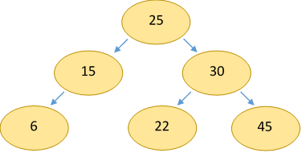
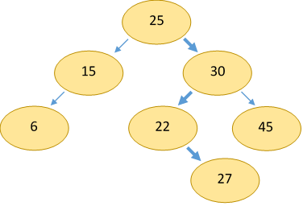
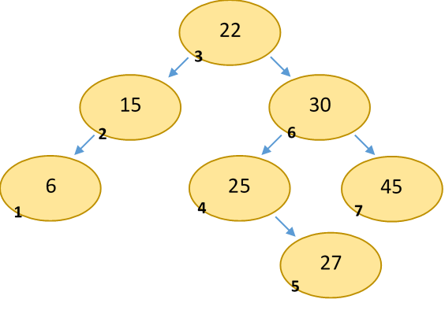
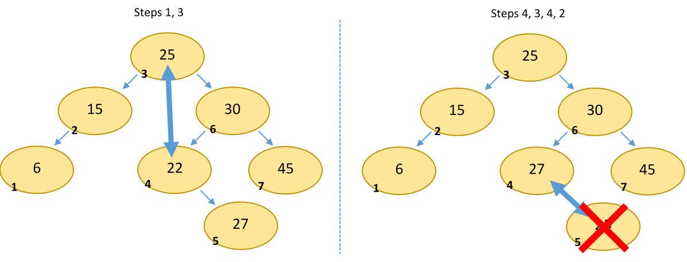

Binary Search Trees
As I mentioned last lesson, binary search trees, like heaps, are a special type of binary tree. In fact, BSTs are just like heaps, except that instead of parents having larger values than their children, every parent in a BST must have a larger value than its left child and a smaller value than its right child. For the sake of convenience we can decide that a right child can be equal to its parent (right is greater than or equal to), but this is not required.
So how is this structure useful? It turns out that these rules provide an efficient way to store, access, and find comparable values. A subset of BSTs, balanced trees, (which we will talk about later), provide O(log(n)) complexity operations for insertion, removal, and search. Hence, BSTs are used in the implementations of many useful algorithms and data structures, including dictionaries and sorted lists.
A search tree being 'balanced' means that any branch of the tree does not have significantly (i.e. on the scale of O(n)) more nodes than any other.
An example BST:
Note that the parent-child relationship (and being a binary tree) is all that defines a BST. The structure does not necessarily form a complete tree. Unfortunately, this means that BSTs are not trivially representable as arrays, hence most implementations use a linked representation. This means that BST-based implementations of data structures often lose out to array-based ones in allocation-optimized applications.
Insertion/Search
Inserting an element into a simple BST is very straightforward: simply traverse the tree until you find the correct spot for the new value. To do this, start at the root note and compare its value to the value you want to insert. If the new value is smaller than the root, repeat the same process with the left child. If greater, the right child. Continue this process until a child spot is empty, and insert the new node there.
The exact same process is used to search for an element in the tree. However, instead of traversing the tree until you find an empty spot, traverse until you've found the element. If you end up at an empty child, you know that the element you're searching for is not in the tree.
Assuming the tree is balanced, adding or searching for an element will take O(log(n)) time, as the number of comparisons is a function of the number of levels in the tree, which is logarithmically related to the number of nodes. (A binary tree with N levels has at most 2^N nodes.)
However, if the tree is not balanced, these operations may take up to O(n) time. For example, if values were inserted into the tree in ascending order, the structure would end up being a single line of nodes with a right child. Balanced trees prevent this.
Traversal
The tree traversal algorithms discussed in the last lesson are very relevant here. I mentioned that inorder traversal would become more useful in this lesson: that's because an inorder traversal of a BST will traverse the elements in sorted order. This makes sense if you think about it: for each node, all values lesser than it are printed, then the value itself, then all values greater than it.
Here's an example:
Pre-and-postorder traversals are still useful for some algorithms (for example, deleting the tree), but inorder tends to be the most useful.
All traversals are, of course, O(n) complexity, as they must visit every node once.
Deletion
As with heaps, deletion is somewhat more complicated than insertion, because it's difficult to determine how to replace a node that you want to remove. The algorithm is as follows:
- Find the node you want to remove by descending the tree (same as adding a node).
- If the node is a leaf, delete it (don't forget to set its parent's child to NULL).
- Swap the node with its inorder successor. This is the leftmost child of the to-be-removed node's right child.
- Repeat from step 2 with the successor node.
We use the inorder successor to swap with because we know that that value will maintain the validity of the BST. This is, of course, because it is the smallest value in the tree that is larger than the removed value. Because the value comes from the right subtree, we know that it will be greater than the node's left child. And because it is the leftmost node in the right subtree, we know that it will be less than all the other values in the right subtree. Hence, moving it to the current node will maintain the validity of the tree.
Removing 25 from the example:
Deletion is also O(log(n)) complexity on a balanced tree, as the iterations needed to find a leaf node to remove is a function of the number of levels in the tree. Of course, if the tree is unbalanced this may also decay to O(n).